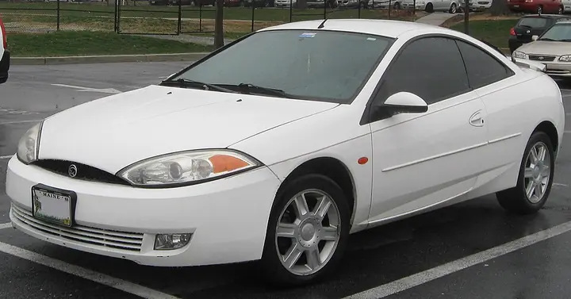
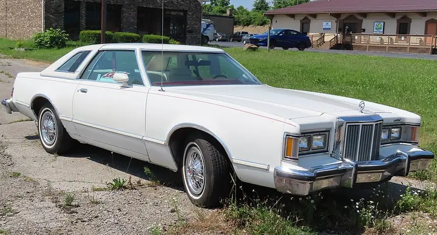
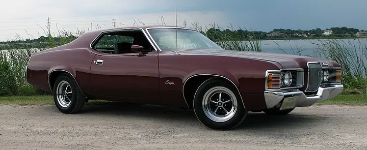

Mercury Cougar
Eighth generation (1999–2002) · 1998–2002
Abstract
This generation of the Mercury Cougar is a sport compact, built 1998 – 9 August 2002 in Flat Rock, Michigan, United States. Body styles: 3-door liftback coupe. Layout: Transverse front-engine, front-wheel drive. Designed by Darrell Behmer.


1Specifications
| Production | 1998 – 9 August 2002 |
|---|---|
| Model years | 1999–2002 |
| Assembly | Flat Rock, Michigan, United States |
| Designer | Darrell Behmer |
| Class | Sport compact |
| Body style | 3-door liftback coupe |
| Layout | Transverse front-engine, front-wheel drive |
| Platform | Ford CDW27 platform |
| Engine | 2.0 L Zetec I4 (gasoline)2.5 L Duratec V6 (gasoline) |
| Transmission | 5-speed MTX-75 manual4-speed CD4E automatic |
| Wheelbase | 106.4 in |
| Length | 185.0 in |
| Width | 69.6 in |
| Height | 52.2 in |
| Weight | 2892 lb |
| Also called | Ford Cougar (Export) |
| Related | Ford MondeoFord CougarFord Contour / Mercury Mystique |
2Versions
- Ford Cougar (Export)
3Previous generations








4Generation by generation
Length −3% from the first to the last
1967–1970 19674,834 mm
1971–1973 19714,996 mm
1974–1976 19745,474 mm
1977–1979 19775,474 mm
1983–1988 19835,019 mm
1989–1997 19895,047 mm
1999–2002 19984,699 mm
Weight −5% from the first to the last
1983–1988 19831,383 kg
1989–1997 19891,600 kg
1999–2002 19981,312 kg